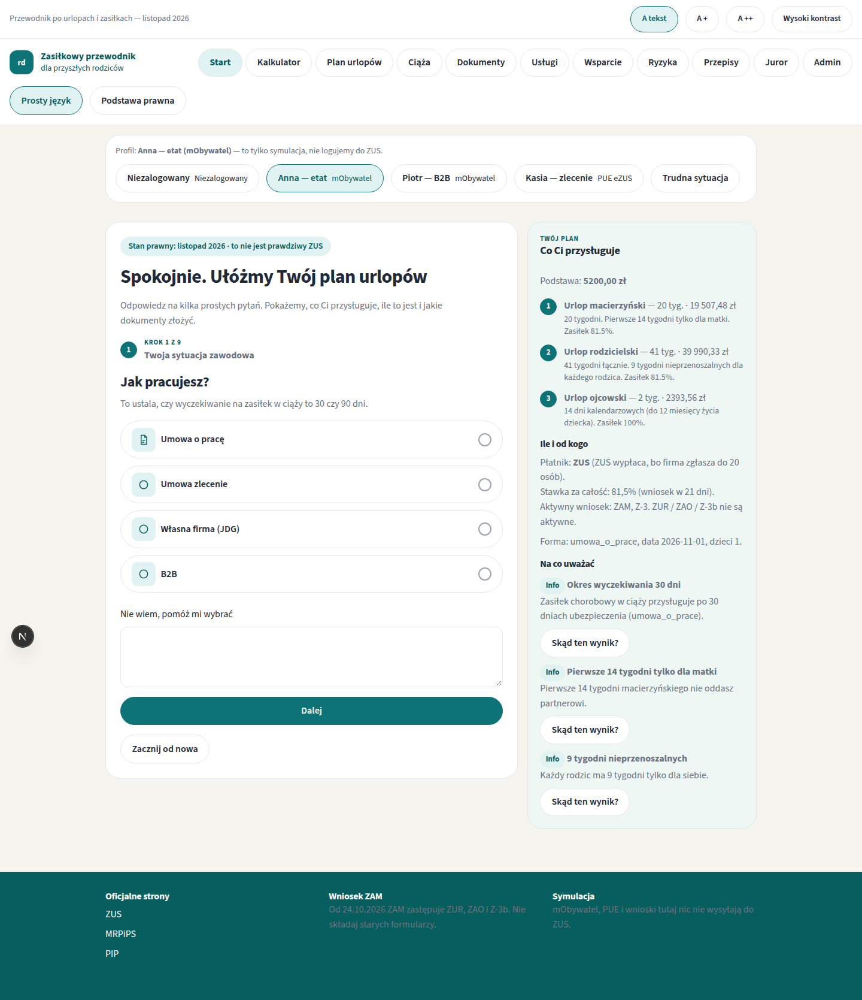
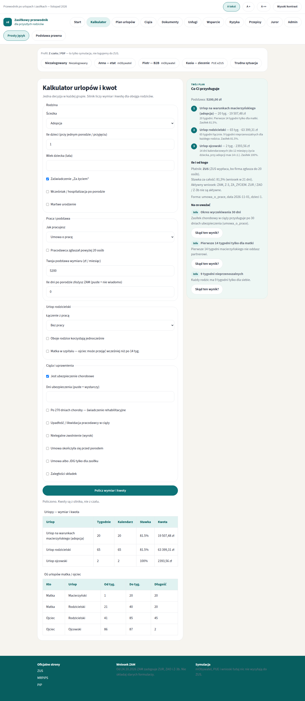
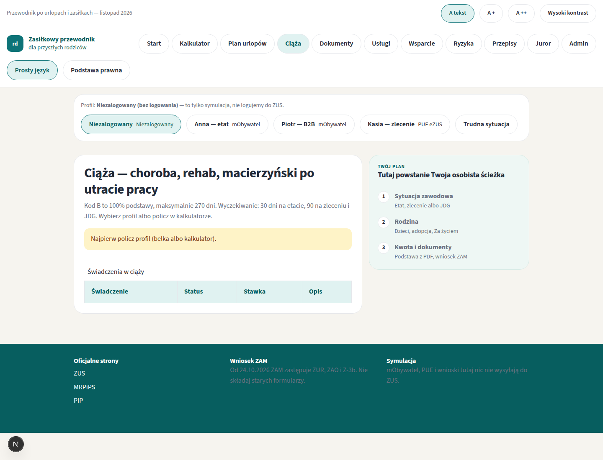
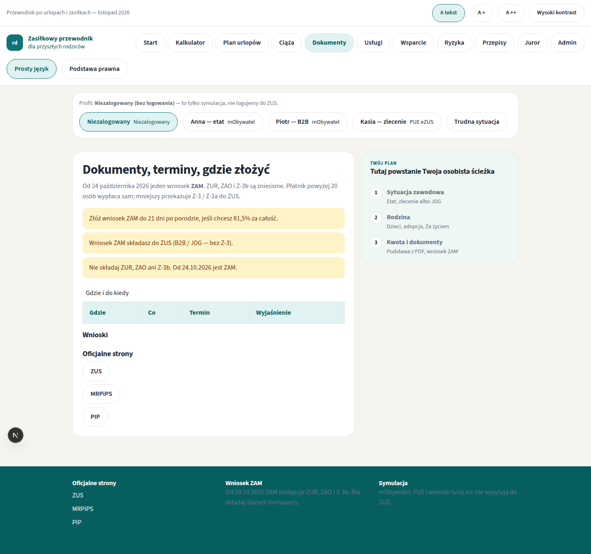
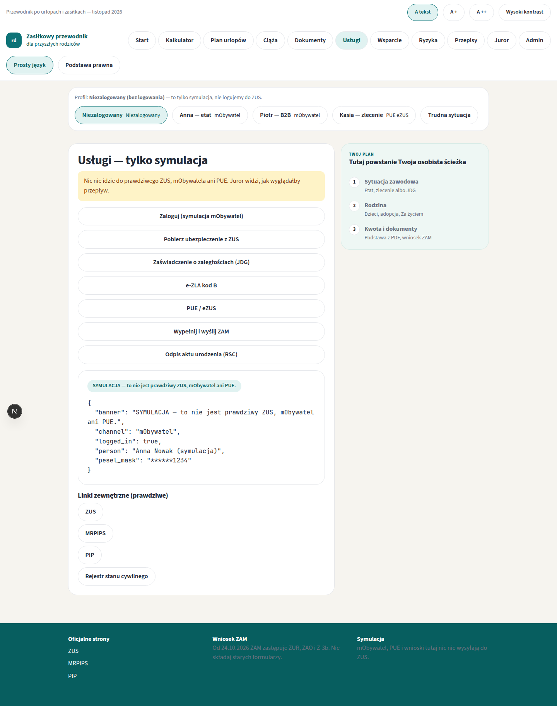
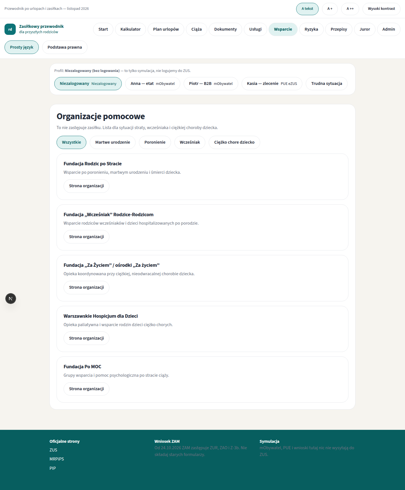
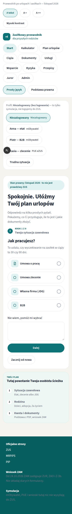
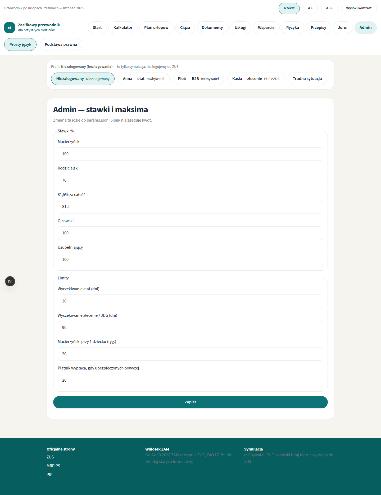

Stan prawny: listopad 2026 · to nie jest prawdziwy ZUS
Zasiłkowy przewodnik przyszłego rodzica
Spokojnie. Ułóżmy plan urlopów: co przysługuje, ile to jest w złotych, jaki wniosek złożyć i komu — pracodawcy albo ZUS.
- Jedna decyzja na krok, prosty język, dostępność WCAG 2.1/2.2 AA+.
- Od 24.10.2026 jeden wniosek ZAM (nie ZUR, ZAO, Z-3b).
- Kwoty liczy silnik Python — nie czat.
Slajd 2
Architektura: silnik oddzielony od słów
- Frontend: Next.js, TypeScript, Tailwind.
- Backend: FastAPI + Pydantic + NetworkX.
- REST JSON:
/api/calculate,/api/pdf/calculate,/api/chat. - Graf wiedzy: każdy węzeł ma
plain_languageilegal_basis.
| Zadanie | Warstwa |
|---|---|
| Wymiar, stawka, złote | Python |
| Pola z PDF | Regex (+ LLM opcjonalnie) |
| Brzmienie czatu | LLM + GraphRAG |
Slajd 3 · brief a, b, f
Kalkulator: wymiar i kwota dla obojga rodziców
Liczba dzieci, Za życiem, podstawa z PDF albo wpisana ręcznie. Profil Anna: 20 tyg. i 19 507,48 zł z podstawy 5200 zł.

Slajd 4 · brief c, d, e, j
Adopcja, ½ etatu, oboje rodzice
Jedna strona z opcjami: adopcja / zastępcza, łączenie z pracą (kalendarz się wydłuża), urlop razem. Poka-yoke: pierwsze 14 tygodni zostają przy matce.

Slajd 5 · brief a
Ciąża: kod B, rehab, brak uprawnień
100% przez max 270 dni (kod B). Wyczekiwanie 30 / 90 dni. Są też ścieżki bez prawa do zasiłku — aplikacja to mówi wprost.

Slajd 6 · brief g
ZAM, terminy, pracodawca albo ZUS
Jeden wniosek ZAM. Płatnik powyżej 20 osób wypłaca sam. Mniejszy — Z-3 / Z-3a do ZUS. 21 dni na stawkę 81,5%.

Slajd 7 · brief usługi
Usługi — tylko SYMULACJA
Nic nie idzie do prawdziwego ZUS, mObywatela ani PUE. Baner jest zawsze widoczny.
mObywatel, ubezpieczenie, zaległości JDG, e-ZLA, PUE, wniosek ZAM, odpis aktu (RSC). Linki: zus.pl, MRPiPS, PIP.

Slajd 8 · brief i + h
Wsparcie i ryzyka
Fundacje przy stracie, wcześniaku, poronieniu, ciężko chorym dziecku. Tryb „Trudna sytuacja” wycisza interfejs. Radar ryzyk opisuje status słowem, nie samym kolorem.

Slajd 9
Dostępność i RWD

- Układ składa się na telefonie (390 px sprawdzone).
- Klawiatura,
:focus-visible, cele 44×44 px,aria-live. - Czcionka 100 / 125 / 150%, wysoki kontrast, prosty język vs podstawa prawna.
- Tabele jako odpowiednik osi urlopów.
Slajd 10
AI tylko tam, gdzie wolno · potencjał wdrożenia
- Nie liczy zasiłku. Kwoty =
rule_engine.py. - PDF: regex zawsze; LLM tylko do pól, gdy jest klucz.
- Czat: LLM formułuje zdania z podgrafu, bez wymyślania tygodni.
- Admin: stawki i maksima w
params.json(REST PUT) — zmiana prawa bez redeployu kodu. - Juror:
/juroralboGET /api/samples/{id}/pdf.
